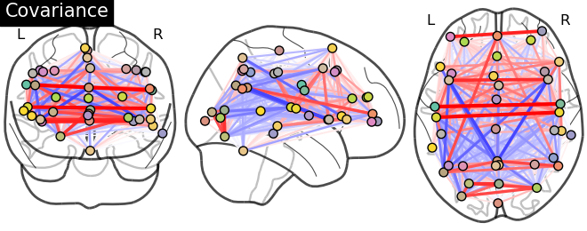

In this section, we detail the general tools to visualize neuroimaging volumes with nilearn.
Nilearn comes with plotting function to display brain maps coming from Nifti-like images, in the nilearn.plotting module.
Nilearn has a set of plotting functions to plot brain volumes that are fined tuned to specific applications. Amongst other things, they use different heuristics to find cutting coordinates.
 |
plot_anat
Plotting an anatomical image |
 |
plot_epi
Plotting an EPI, or T2* image |
 |
plot_glass_brain
Glass brain visualization. By default plots maximum intensity projection of the absolute values. To plot positive and negative values set plot_abs parameter to False. |
 |
plot_stat_map
Plotting a statistical map, like a T-map, a Z-map, or an ICA, with an optional background |
 |
plot_roi
Plotting ROIs, or a mask, with an optional background |
|  | plot_connectome
Plotting a connectome |
 |
plot_prob_atlas
Plotting 4D probabilistic atlas maps |
| plot_img | plot_img
General-purpose function, with no specific presets |
Warning
Opening too many figures without closing
Each call to a plotting function creates a new figure by default. When used in non-interactive settings, such as a script or a program, these are not displayed, but still accumulate and eventually lead to slowing the execution and running out of memory.
To avoid this, you must close the plot as follow:
>>> from nilearn import plotting
>>> display = plotting.plot_stat_map(img)
>>> display.close()
 |
display_mode=’ortho’, cut_coords=(36, -27, 60)
Ortho slicer: 3 cuts along the x, y, z directions |
 |
display_mode=’z’, cut_coords=5
Cutting in the z direction, specifying the number of cuts |
 |
display_mode=’x’, cut_coords=(-36, 36)
Cutting in the x direction, specifying the exact cuts |
 |
display_mode=’x’, cut_coords=1
Cutting in the x direction, with only 1 cut, that is automatically positionned |
 |
display_mode=’z’, cut_coords=1, colorbar=False
Cutting in the z direction, with only 1 cut, that is automatically positionned |
 |
display_mode=’xz’, cut_coords=(36, 60)
Cutting in the x and z direction, with cuts manually positionned |
 |
display_mode=’yx’, cut_coords=(-27, 36)
Cutting in the y and x direction, with cuts manually positionned |
 |
display_mode=’yz’, cut_coords=(-27, 60)
Cutting in the y and z direction, with cuts manually positionned |
To add overlays, contours, or edges, use the return value of the plotting functions. Indeed, these return a display object, such as the nilearn.plotting.displays.OrthoSlicer. This object represents the plot, and has methods to add overlays, contours or edge maps:
display = plotting.plot_epi(...)
 |
display.add_edges(img)
Add a plot of the edges of img, where edges are extracted using a Canny edge-detection routine. This is typically useful to check registration. Note that img should have some visible sharp edges. Typically an EPI img does not, but a T1 does. |
 |
display.add_contours(img, levels=[.5], colors=’r’)
Add a plot of the contours of img, where contours are computed for constant values, specified in ‘levels’. This is typically useful to outline a mask, or ROI on top of another map. Example: Plot Haxby masks |
| add_overlay | display.add_overlay(img, cmap=plotting.cm.purple_green, threshold=3)
Add a new overlay on the existing figure Example: Visualizing a probablistic atlas: the default mode in the MSDL atlas |
To display the figure when running a script, you need to call nilearn.plotting.show: (this is just an alias to matplotlib.pyplot.show):
>>> from nilearn import plotting
>>> plotting.show()
The simplest way to output an image file from the plotting functions is to specify the output_file argument:
>>> from nilearn import plotting
>>> plotting.plot_stat_map(img, output_file='pretty_brain.png')
In this case, the display is closed automatically and the plotting function returns None.
The display object returned by the plotting function has a savefig method that can be used to save the plot to an image file:
>>> from nilearn import plotting
>>> display = plotting.plot_stat_map(img)
>>> display.savefig('pretty_brain.png')
# Don't forget to close the display
>>> display.close()